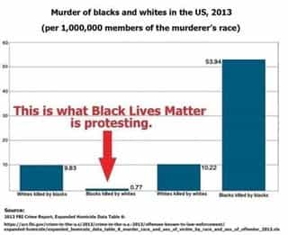

André is a young European who left his decaying country in 2012 for greener pastures. He enjoys exploring subterranean places, reading about a host of interconnected topics, and yearns for Tradition.


A French-Jewish essayist once said: “Time has come to deconstruct the deconstruction apologists.” This was in 2014. That year, our trend had already progressed much compared to the preceding years. I can remember the 2000s as a period covered by a lead cloak, a dull time to live, where most if not all mainstream culture was a disgusting mix of soft SJWism, r’n’b, miscegenation apology, socialism and the like. Since then, we managed to achieve a lot, beyond what anyone in the 2000s would have thought even possible, and this is still true even when not counting The Donald’s ushering into office.
Of course, this is only the beginning, and those who held the lead cloak of political correctness beyond our heads will not accept gladly that they are losing some of their grip. They were aiming, and still aim, at total victory—that is, the annihilation of white middle classes, the complete blurring of sexes, the irreversible decline of people of European descent, the rewriting of history, the destruction of the traditional family to the benefit of a brave new world, total SJW cultural power, gynocracy, and so on.
They will accept no middle ground, no peaceful coexistence: the very identities of so-called “minorities” are based on anti-white or anti-male resentment, and the very definition of what they call “progress” is the displacement and disenfranchisement of the white majority. Rabid SJWs will always push here and there—no lasting peace is ever possible with those whose sense of self lies in waging culture war in the name of “progress”, and this is why spineless, willing-to-compromise conservatives will always be cucks.
As we become mainstream and drill the cloak, it is necessary to focus on the right enemy and hit it efficiently. If we stop doing so, it won’t. Shrewd “white” intellectuals—note the quotation marks here— will always find a weakness to exploit and send some useful idiots there.
Hence, let’s deconstruct the deconstruction apologists swiftly. This article is the first of a series about the leftists’ worldview and tools. Understand them better than they understand themselves, dismantle their thought structures, and catch them hamsterizing their contradictions or melt down into further hysteria.

Michel Foucault, an overrated homosexual militant professor: “What? People on the right doing deconstruction? I don’t want to hear about that, since I have started to deconstruct patriarchal capitalism I’ve got a copyright on deconstruction.”
We know how addicted SJWs are to blaming, accusing, negating, openly despising non-leftists, being perpetually offended and taking the moral high ground. Everything is good to them when it comes to have a pretext to enforce their narrative—that is, a worldview where we are always the bad guys, whereas they and those who identify as “minorities” are always innocent and can do no wrong. Their accusations often follow a pattern, and one of these patterns is the charge of double standards. For example, we would be “guilty” of distinguishing between white and non-white immigrants, or between men and women.
Having different standards for different people and situations is justified. As Aristotle said (Nicomachean Ethics, book V, chap.3), fairness is not about equality—in the sense of a kind of abstract identity between different individuals—but about equity: equal standards between what is actually identical, not between what is different and ought to be.
Males and females are different. Their different social roles are consistent with both the inner needs of individuals and the outer needs of society, which relies on complimentary between the sexes, not on a weird inter-sexual competition.
On the same way, homogeneous societies are those where trust and metapolitical peace flourish, so, having a standard that aims at maintaining our homogeneity is pragmatically justified—not to mention the unfairness of massive population replacement against those who built the West. In both cases, we have different sets of standards for what ought to remain different, and these sets should never be “deconstructed” and boiled down into a multicultural soup.
However, it is also clear that all differences in standards are far from justified. An obvious example could be nepotism practised at the expense of a genuine meritocracy.
Likewise, the leftists who cry about our real or supposed double standards entertain themselves a lot of those. And those are not about Aristotelian equity, but about hypocritically granting different rights for different people… based on divisive “identity politics,” hidden behind taboos, and justified by an irresponsible pretense to “equality.” While normal standards are based on reality and on a healthy sociability, leftist double ones are justified by the accusatory leftist narrative of “oppression” or “inequalities”—in other words, their various sets of standards are circular and barely justified outside the liberal bubble.
Ultimately, all leftist double standards contribute to the current anarcho-tyranny, that is, to a strange mix between impunity for some and ultra-severity for others.
We have long been told that everyone would be better off if there were neither nations nor frontiers, as Lennon sung in “Imagine,” and that whites must be colorblind because taking race into account is “racist.” In the 60s these imperatives were already conflicting with the idea that “colonized” people had a right to self-determination, that is, to a separate collective identity, and with so-called affirmative action. Since then, it became increasingly obvious that only whites had to pretend to colorblindness. No liberal ever yelled at blacks for being communitarian. Only we who don’t fit into the “minorities” circle were supposed to deny our own identities and act as if we were abstract individuals.
Conservatives who noticed this double standard—so-called minority groups have a right to a specific collective identity, the silent majority doesn’t—mostly denounced it out of adhesion to nothingness. Everyone should try to blend away inside the melting-pot, not only whites or males, hence “the Democrats are the real racists!” Of course, this disastrous line means whites or males should accept to be milled into the melting-pot, and if you want to exist as you are, well, “you’re a racist!”
Fortunately, for once, it was the left who did a big leap forward. In the mid-2000s, after enforcing colorblindness for whites and sexblindness for males, they completely turned around and started to speak about race and “gender” all the time. This move seems to owe to an exasperation of minority identitarianism: after decades of building collective identities where there were none or very few before, they had to victimize themselves more and attack us more, hence being openly identitarian and divisive, to maintain their identity-building dynamic. We still don’t have the right to openly exist, but the very obsession of the left over “cishet white males” and “toxic masculinity” participated dialectically into making our very identity more existent.
This has been painful, but the left (involuntarily?) helped us to separate the red-pilled wheat from the mildly conservative chaff.
This one has been especially conspicuous when the UK opted out of the EU. Post-WW1, the dismantling of important European empires into petty countries has been legitimized on grounds of “people’s rights to self-determination.” The line was also pushed forth post-WW2 when local third world violent groups were given free reigns in countries almost wholly built by European colonizers by both hypocritical Americans and West-hating USSR. It has been used to justify as well the identitarianism and separatism of so-called minority groups.
(All these situations eventually turned into large-scale disasters, the first one summed up into the expression “balkanization”—must be a coincidence.)
Now look at what has been said about populist parties and the Brexit. “Populism” happens when the people, unrepresented by traitorous elites, wants to exist again through a leader it can identify with. Brexit happened as a result of Englishmen willing to cut off from the stifling EU bureaucracy and bring back their jobs. Both stem from the will to determinate oneself as a group—and it could be argued that collective self-determination stems from the same willingness than the desire to liberate ourselves from the SJW straightjacket.
Nonetheless, and quite predictably, our right to self-determination is either openly denied or framed as “regressive,” “oppressive” to some Big Other, and the like. Some can rule themselves, or at least pretend they have a right to do so; others ought to remain cattle under the managerial State-Corporations complex and its SJW minions.
In 2009, the French newspaper Le Figaro ran a piece about Jews being afraid to “disappear on the long term” out of their failing demography. As a non-Jew, I can perfectly understand that Jews care about their people’s destiny. But then, why can’t we care about our existence as well? Those who promote miscegenation also say that opposing their influence-peddling is “racist.” I suppose wanting to maintain one’s identity and future is “racist” as well—when one is white of course.
In the academic world, some strange Jewish teachers have been busy redefining “whiteness” as a pure “privilege.” This equates to saying that our very existence is mostly, if not entirely, negative, unfair to the Big Other, and should be erased by all means. As The Occidental Observer writer Andrew Joyce aptly put it, this very worldview and its propagation are essentially “an act of inter-ethnic aggression” pursued at the heart of the System.
The twisting of people’s worldview equating “whiteness” or “masculinity” to “privilege” and “oppression” feed a double standard that grants everyone else the right to exist, such right being part of “progress” and “emancipation,” whereas our simple existence is associated to the most vile and perverse accusations. If you find the last sentence overusing quotation marks, this stems from how much common language has been twisted in order to create a subtle double standard in how the average Joe perceives people’s rights.
“I don’t have to be tolerant, because I am tolerance incarnate, but YOU, filthy normal person, BE TOLERANT or we’ll have you fired!”
A long time ago, “tolerance” used to be an injunction asking everyone to tolerate difference. Read Locke’s Letter on toleration (1689): in a context of inter-religious wars, the author asks every belligerent to tolerate the very existence of the others. A few decades later, however, cunning anti-Catholic intellectuals started to use to “toleration” plea as a one-sided accusation. They equated the very Church with “intolerance,” hence casting themselves and their own ideas as equated with “tolerance.”
Used that way, the “tolerance” thing essentially means that an agent A blames another one, B, for being purportedly oppressive, and asks him to tolerate a growing aggressive faction at its own side. This tactic tends to cast B as a villain, puts B on the defensive if B cannot exit the tricky framing, and, most importantly, leads B to be completely passive while A can be active—in the name of toleration. After what, A can freely build influence while B remains frightened.
All those who asked for toleration turned into dictators and murderers, all those who accepted to be more “tolerant” ended up overthrown and killed. The Church’s mild tolerance got thousands of priests slaughtered by revolutionaries. Today, what has been going on is exactly the same: those who pretended to be oppressed and asked for toleration have grown into aggressive and cancerous groups. Whoever asks for tolerance wants more power for him and wants the other to remain passive whatever himself does.
The left intuitively understands that. Have you ever witnessed anyone ask a rabid feminist or SJW to be more tolerant? Of course not. Only we are supposed to be more “tolerant” while hateful minoritists grow—and I could bet anything that, had we not revolted through the manosphere, Alt-Right, or Trump candidacy, they would push their advantage until all “straight white males” got killed or willingly renounced to live.
The most perverse thing here is that these double standards are often taken as self-evident, so much that leftists themselves enforce them without even thinking about it.
For those out of the Matrix, left-enforced double standards often give the feeling of something wrong, but they are also too elusive to be pinpointed. The whole narrative of “white privilege”, “patriarchy” and other contrived or cherry-picked stuff (see below) actually hides these double standards while also justifying them—’cause racism against whites is “social justice”, y’know.

Now, these can be spotted in the intertext, as deconstructionist Jacques Derrida would say, of most SJW-poised content. Spotting the double standards makes them much less powerful and helps to understand the true structure and motives behind leftist sophistry. If you happen to debate a leftist, do not hesitate to call him out when he uses ones, whether he is aware of it or not.
Your humble servant being about to become a father—and wanting his future children to live in a world where they have a place—the series on leftism may run with some irregularity. I have just mentioned a few of the double standards that deserve to be pointed out and excoriated from their comfy mainstream intertext. So, stay in touch.
Read Next: Double Standard: Male Victim Says Men Shouldn’t Walk Alone, No One Yells “Victim Blaming”